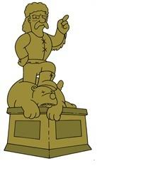
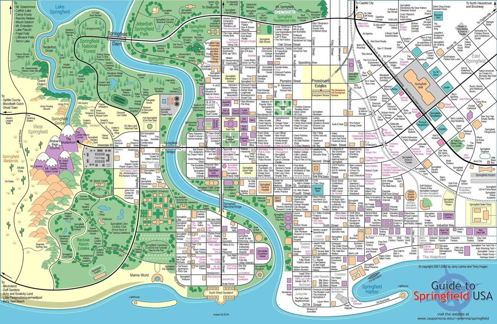

Springfield es el nombre de la ciudad ficticia en donde la serie de televisión de dibujos animados estadounidense Los Simpson está ambientada.
Historia de la ciudad

Springfield fue fundada en 1796 por colonos que buscaban un paso hacia Maryland tras malinterpretar un pasaje de la Biblia.En realidad buscaban Nueva Sodomia. El pionero Jeremias Springfield fundó el pueblo y se convirtió en una figura local.
Rivalidad Con Shelbyville
Su ciudad rival, Shelbyville, fue fundada por su compañero de viaje y luego enemigo, Shelbyville Manhattan. La rivalidad entre ambas se remonta a cuando ambas ciudades fueron fundadas y se originó por las diferencias en el modo de vida que querían llevar cada uno de ellos. Shellbyville Manhattan quería llevar una vida de diversión y quería que los hombres pudieran casarse con sus primas, mientras que Jeremias Springfield quería mantener una vida casta y un gobierno justo.
Características Principales
LA CIUDAD CUENTA CON
MAPA DE SPRINGFIELD
